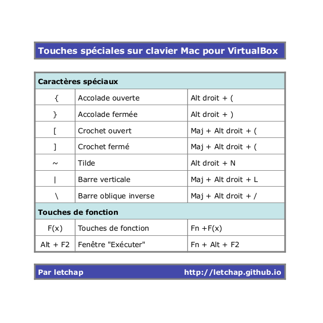

Thu 20 March 2014
VirtualBox
En conservant le paramétrage par défaut de VirtualBox, il n'est pas possible de créer une connection SSH avec un invité Linux.
Pour rendre possible cette connection SSH, il faut modifier le paramétrage de l'onglet réseau dans VirtualBox pour le positionner sur "Accès par pont". Cela vous permettra d'avoir une adresse …
la suite ...
Thu 20 June 2013
VirtualBox
Pour pouvoir profiter pleinement d'une distribution Linux virtualisée grâce à VirtualBox sur une ordinateur Mac, il faut pouvoir retrouver les touches spéciales qui, sans cela, rendent compliqué l'utilisation du terminal ou des éditeurs de texte.
J'ai donc remis tout çà dans une petit tableau disponible au téléchargement ici.

Pour les …
la suite ...
Fri 07 June 2013
VirtualBox
J'ai testé un certain nombre de distributions sur une VirtualBox installée sur un iMac et la plus stable à ce jour est sans conteste Crunchbang. De plus, comme c'est une distribution légère, j'ai l'impression d'avoir une bête de course. Mais surtout, surtout, fini les problèmes d'affichage, les redémarrages douloureux après …
la suite ...
Tue 09 April 2013
VirtualBox
Malgré toute sa bonne volonté mon pauvre vieux PC de 2003 touche certaines limites. La plus génante concerne l'obsolescence de la carte graphique, il m'est par exemple impossible d'utiliser Kivy.
C'est l'occasion d'installer une distribution sur mon iMac. Et pour tester un univers que je ne connais pas et qui …
la suite ...